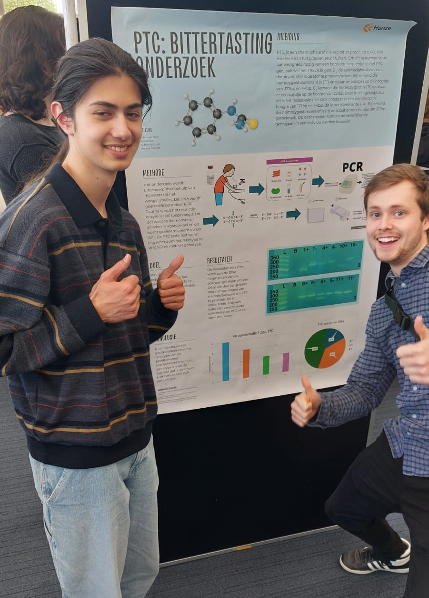
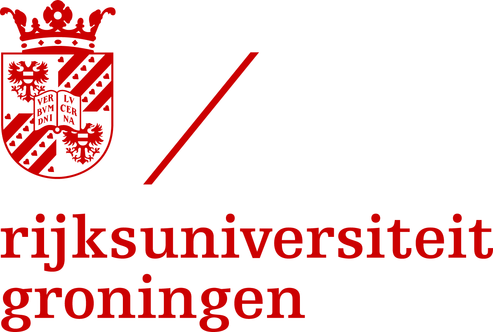
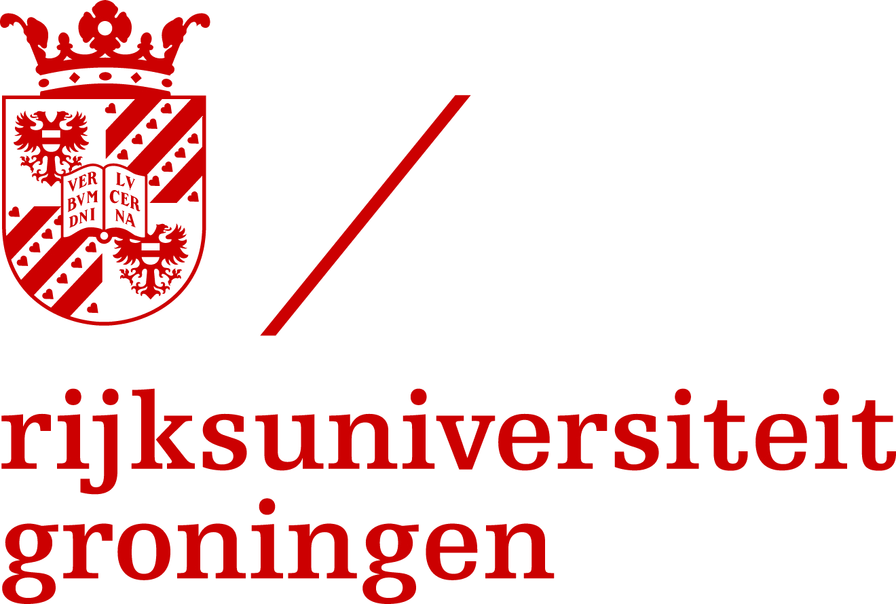

A Cataclysmic Happening: A Disillusional Poster Day
Published: 19-4-'24/ Last updated: 19-4-'24
Written by Milan

Ruben and I proudly displaying our poster that should not be there among the "good" posters that have won.
Students of the Institute of Life Science and Technology experienced a dreadful poster day filled with embarrassments and struggles. Milan from Research reports.
Friday, april 19th finally came after long days of intensive labour at the laboratory, after which we would have to create a poster and possibly present it to our institute. Nevertheless, I encountered my first issue before the day had even started. As is usual for the faculty, a misleading schedule was presented to us via our emails, in which it said there were no activities occuring before 11 'o clock, which is quite far from the truth actually. Consequently, I almost came in late for the presentations which our whole class would attend. It would have been an even bigger problem if I was the one who would have been presenting. Anyways, I made it on time, hungry, and a bit vexed. The prospect of having to stay here till 16:00 did not make it better to me.
After the poster presentations, everyone would be able to view eachother's poster in a classroom at the far end of the A-wing. Summarized, it was very claustrophobic and hot being crammed in a small classroom with a whole class. It was like we were bacteria in a petri dish. Besides, instead of listening or reading what students here have to say, it is as if some people enjoy critiquing other people's works as much as anything else on this planet. Particularly one of the teachers. Instead of being cross at someone's work for not being up to your standard, why do you not give it actual valid criticism? Some of these students just came crawling out of the womb in comparison to you, thus elevating the bar would be an unfair experience to those. Nonetheless, most teachers were COOL about it thankfully. At the end of roaming around the petri dish looking at posters, the best 5 posters were selected. Now, mine did not get chosen, but atleast we did not have to present in a lecture hall full of people.
The institute-wide poster presentations (the best 5 per class) were held in the auditorium across our building. Now, the auditorium is basically a lecture hall with the most uncomfortable chairs you have ever sat in. Actual university students must have it hard being confined to such a space for three hours. In all fairness, the presentations were a bit dull. Especially with no background knowledge, it is hard to be inquisitive about the matters discussed here. However, I was happy I could see my classmates present and doing well. Subsequent to the lectures in the auditorium, the posters were to be viewed in a more reasonable classroom which was situated on the second floor above the cantine. Despite the larger room, it was still crammed as we must account for the people from the other groups as well. Just like the presentations earlier, it was hard to channel my inner curiosity for the production of synthetic potato starch or cell line research. By the way, only the best posters from the institute were meant to be displayed there, but we decided to hang our poster there as well (please view the image above..) with permission(?) from a teacher. As a result, our poster had more buzz in comparison to actual "good" posters. In spite of that, I must admit that the absence of a poster at a display in front of the entrance, and later seeing something hanging there, not horizontally and crooked, would have probably been an eye catcher to some.
Finally, I get to tell you about the award ceremony. You may want to skip reading this part, so please bear with me. First, we, the whole institute, or at least the ones who decided to stay after the inital presentations, had to collect in the central hall and confine ourselves standing there for a good half an hour. Furthermore, in my opinion, the foods and drinks did not make it up for what we had to go through. After having to wait 30 minutes, the study association decided it would be a great idea to hold a pubquiz. Why? Perhaps it was for distraction so the teachers had more time on their hands to decide which posters would win a 100 euros (the equivalent of the institute's budget). I stayed with a group of friends and after a while we decided to go to the first floor so we could sit. Eventually the winners of the poster wide competition were announced. First chemistry, chemical engineering, then Bioinformatics. Research and medical diagnostics were LEFT OUT of the award ceremony, thus no one knows who has won. Instead, we get to know NEXT WEEK. In all bluntness, they should have just let us leave the premises. Moreover, one of the teachers said it was almost something for the institute to be ashamed about.
All in all, it was a tiring day. Not just for the students, but perhaps also for the teachers. I did have my fair share of fun here and there, especially connecting with other people I normally would not really talk to. Having our posters displayed encouraged discourse and discussion about our topics, which is one of the most important things in science and academia. Besides, suffering with other people is a great way to make new friends and get to know eachother better. In time to come, I might have to start advertising SCC Bio Labs more as a poster day could be a great oppotunity to do that.

 
